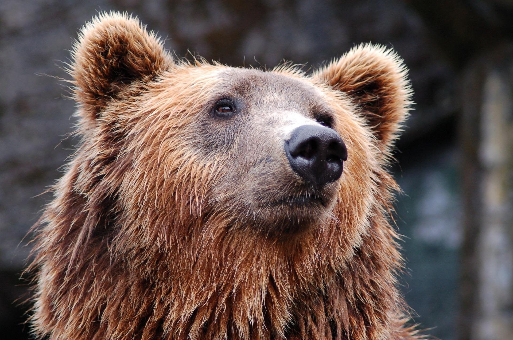

Nguyen Duc Duy
Képtelen természetrajz
A MEDVE
A medve igen otromba állat, különösen a lába nagy, ami elárulja, hogy nem előkelő származású. Természetesen többféle medve van, amint az általában többféle állattal így van. Van barna medve, mosómedve, erdei medve és fehér medve, az utóbbit jegesmedvének is hívják. A medve vegyes táplálkozású állat, ami azt jelenti, hogy húst is eszik, meg növényi táplálékot is, néha csemegéül az állatkertben be-bekap egy-egy, a ketrecébe benyúló emberkezet, de erről a táplálékáról lassanként egészen leszoknak a nyúlkáló emberek. A barna medve szőrének színe barna vagy fekete, a fehér medvéé pedig fehér vagy sárga, szóval ez is majdnem úgy van, mint a fehér kávéval, amelynek a színe barna, s a fehér borral, amelynek a színe sárga, s a vörös borral, amelynek a színe lila.
Milyen állat a medve?

A medve vadállat, ami annyit jelent, hogy távol él az emberektől, viszont az emberek azért vadak, mert nem élnek egymástól távol, hanem úgynevezett társas, sőt úgy csúfolt kultúréletet élnek, ami egyike a legszebb találmányoknak. A medve hangját dirmegésnek-dörmögésnek mondják, ez a szép hang arra vall, hogy a medve nem megelégedett lélek, amiben hasonlít a zsörtölődő öregurakhoz.
A medve és a tél

A medve utálja a telet, ebben e tanulmány jó ízlésű írójához hasonlít. Az egész telet átalussza barlangjában, s ezáltal a szénkérdést és a spanyol nátha kérdését a lehető legpraktikusabban oldja meg, tehát nem is olyan ostoba állat, mint amilyennek kinéz. Gyertyaszentelőkor előjön a barlangból és szétnéz; ha szép idő van, a néphit szerint visszabújik a barlangjába, mert arról megtudja, hogy még sokáig tart a tél, ha pedig csúnya idő van, akkor künn marad, mert tudja, hogy nemsokára kitavaszodik. Így hiszi ezt a nép. A medve azonban sokkal ravaszabb, mint a nép és az ő hite, ha szép idő van, kinn marad, azért, mert szép idő van, ha pedig csúnya idő van, akkor visszamegy a barlangjába, azért, mert juj, de csúnya idő van odakinn. Ez a lehető legkörmönfontabb gondolkodás, amit a medve még azáltal is komplikál, hogy nem pont gyertyaszentelőkor bújik elő, hanem csak úgy gyertyaszentelő tájban, egy kicsit korábban, vagy egy kicsit későbben, csak azért, hogy a néphit egyáltalában ne tudjon rajta eligazodni.